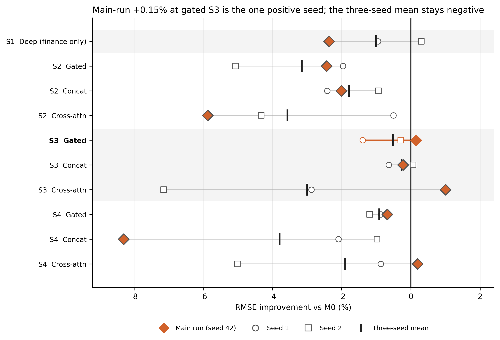

Appendix B — Extra results & robustness
All checks use the same protocol as Chapter 3 (lookback 4, expanding window, 257 scored weeks).
6.6 B.1 Deep fusion matrix
Entries are RMSE improvement versus M0 (%). Positive values indicate lower RMSE than the no-change benchmark.
| Set | Concat | Gated | Cross-attention |
|---|---|---|---|
| S2 (finance + RS) | −2.01 | −2.43 | −5.87 |
| S3 (finance + shipping) | −0.22 | +0.15 | +1.00 |
| S4 (finance + RS + shipping) | −8.30 | −0.68 | +0.19 |
M0 is cleared only where shipping is present. S2 never beats M0. Concatenation clears M0 in no set. The three positive cells are descriptive orderings on one seed.
6.7 B.2 Random-seed robustness
Three random seeds (42, 1 and 2) for every Deep specification in Table 4.5. The main seed-42 run is marked with a diamond. Means remain negative for all specifications; only five of thirty individual runs are positive.

Figure 6.1: Random-seed robustness of Deep specifications: individual seeds and means relative to M0. The main seed-42 run is marked with a diamond.
6.8 B.3 Matched Flat–Deep comparisons
Same eight pairs as Table 4.3. Improvement is the Deep RMSE reduction relative to the matched Flat model, \(100\times(1-\mathrm{RMSE}_\text{Deep}/\mathrm{RMSE}_\text{Flat})\). Positive values indicate a lower Deep RMSE. p is the probability of a difference at least this large if the two models had the same RMSE. Smaller p indicates stronger evidence that their RMSEs differ. n = 257.
| Feature set | Flat | Deep | Improvement (%) | p |
|---|---|---|---|---|
| S1 | Ridge | Deep | +0.15 | 0.466 |
| S1 | XGB | Deep | +2.71 | 0.097 |
| S2 | Ridge | Deep gated | +3.64 | 0.096 |
| S2 | XGB | Deep gated | +4.22 | 0.042 |
| S3 | Ridge | Deep gated | +6.78 | 0.064 |
| S3 | XGB | Deep gated | +5.95 | 0.010 |
| S4 | Ridge | Deep gated | +7.85 | 0.029 |
| S4 | XGB | Deep gated | +7.23 | 0.009 |
All eight pairs favour Deep. Four have p below 0.05.
6.9 B.4 Publication-lag sweep
Locked as-of lags are GFW monthly presence +4 weeks and monthly macro +5 weeks (Appendix A.3). Alternative lags are an extra calendar shift on already-lagged series. n = 257.
GFW monthly presence (Flat S3)
| Lag (weeks) | Ridge RMSE | Improvement vs M0 (%) | XGB RMSE | Improvement vs M0 (%) | XGB p vs S1 |
|---|---|---|---|---|---|
| 1 | 4.407 | −6.15 | 4.801 | −15.63 | 0.972 |
| 4 (locked) | 4.447 | −7.11 | 4.408 | −6.17 | 0.633 |
| 8 | 4.334 | −4.38 | 4.396 | −5.88 | 0.603 |
Monthly macro (Flat S1: REA and non-oil commodity)
| Lag (weeks) | Ridge RMSE | Improvement vs M0 (%) | XGB RMSE | Improvement vs M0 (%) |
|---|---|---|---|---|
| 3 | 4.255 | −2.49 | 4.399 | −5.95 |
| 5 (locked) | 4.256 | −2.52 | 4.368 | −5.22 |
| 7 | 4.245 | −2.23 | 4.388 | −5.68 |
No lag beats M0. Shortening GFW to +1 week makes XGBoost substantially worse. Monthly-macro lag moves S1 by at most 0.03 RMSE. The locked buffers are not the reason Flat models with spatial features fail to clear M0.